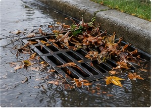
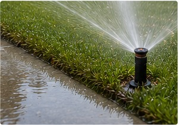
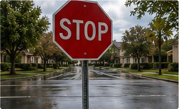

🌧
Prepare for Wet Weather and Prevent Flooding
We are expecting a wet winter. Let’s work together to reduce the risk of flooding and keep water flowing where it should.
- Keep drains, grates and downspouts clear.
- Remove leaves, debris and sediment before storms arrive.
- Check drainage paths around your property.
- Use sandbags where appropriate for known runoff concerns.
- Report standing water or common-area drainage issues to property management.
A little preparation today can prevent bigger problems tomorrow—especially for our neighbors.

💧
Check Your Sprinklers and Conserve Water
Broken or misaligned sprinklers waste water and can cause runoff into neighboring yards, streets and walkways.
- Run each irrigation zone and watch where the water goes.
- Adjust sprinkler heads that spray sidewalks, walls, driveways or neighboring property.
- Repair broken heads, leaks and valves promptly.
- Adjust watering schedules as seasonal conditions change.
Conserving water protects our community, reduces unnecessary runoff and respects a limited resource.

🚗
Safety Starts With All of Us
Residents have reported vehicles moving through stop signs without coming to a complete stop, as well as drivers appearing distracted by mobile devices.
- Come to a complete STOP at every stop sign.
- Look carefully before entering an intersection.
- Stay off your phone while driving.
- Watch for pedestrians, cyclists, children, pets and neighbors.
Let’s keep Carnelian safe for everyone.